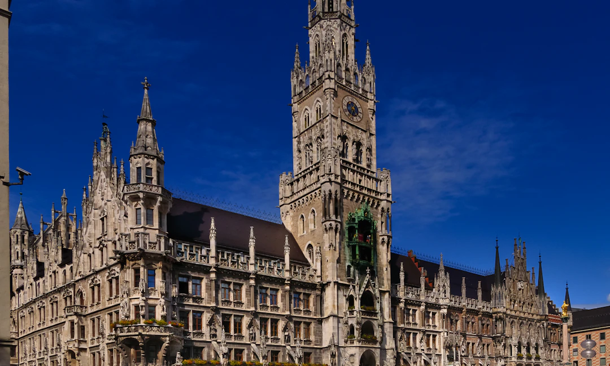

Toate rutele
România → Germania
După , traseul continuă spre , și . Pentru adrese mai la vest, poți cere transport până în zona sau . Opririle se stabilesc după adresele pasagerilor din cursa respectivă.

Te întorci acasă?
Poate te așteaptă ai tăi la masă. Poate pur și simplu ți-e dor de casă.
Dacă pleci din München, Augsburg sau Stuttgart sau din apropiere, indică localitatea exactă și codul poștal. Pentru sosirea în România, trece localitatea în care vrei să ajungi, chiar dacă este un sat.
Pregătește cererea de retur · Vezi zonele de sosire în RomâniaUnde cobori în Germania?
Deschide zona în care vrei să ajungi. Dacă destinația ta este într-o comună din apropiere, trimite-ne adresa și codul poștal ca să verificăm coborârea la adresă.
Localități de destinație în Germania
Alege orașul pentru apel sau WhatsApp.
Sud-estul Bavariei
Zona München
Zona Augsburg
Zona Ulm
Zona Stuttgart
TUR ȘI RETUR
Când vrei
să pleci?
Alege sensul și completează detaliile pentru o solicitare de transport.